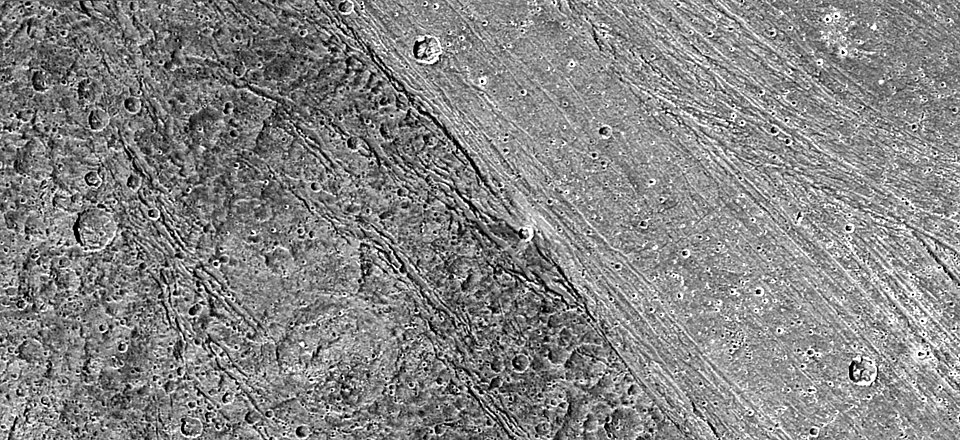
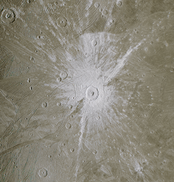

Ganymede
Ganymede is a natural satellite of Jupiter and is the largest known satellite in the Solar System.
It is larger than the planet Mercury, but is less massive.
It was discovered by Galileo in 1610 and is the third Galilean moon from Jupiter.
It is named after the Ganymede from Greek mythology, who was the only male lover of Zeus.
The Hubble Space Telescope has discovered evidence for underground saltwater ocean, potentially the biggest in the Solar System.
The surface is covered with craters and features numerous darker regions of older terrain.
It also has a magnetic field, the only satellite known to have such.
The magnetic field is likely affected by the interior ocean.
The ongoing ESA mission JUICE is planned to orbit Ganymede and study the satellite.
Ganymede is named after the mythological Trojan prince who was abducted by Zeus to serve as the cup-bearer of the gods.
The theme of naming the moons after Zeus's lovers was first suggested by Johannes Kepler and later adopted by Simon Marius.
Previous proposals were naming the moon after a member of the Medici family and "Jupiter of Jupiter".
The names weren't accepted initially until the discovery of the moons of Saturn.
Before that, the four Galilean moons were refered to as Jupiter I through IV in order from closest to furthest (Ganymede was Jupiter III).
The first possible detection of Ganymede was reported in 365 BC when Gan De noticed what might be a Jupiter moon with his naked eye, although it is not proven that the object is any of the satellites.
In 1610 Galileo Galilei discovered four "stars" around Jupiter that he found to be moving.
He later concluded that the bodies were moving around Jupiter.
Around the same time, Simon Marius discovers the moons independently.
Orbit and rotation
Ganymede, Europa, and Io orbit Jupiter in orbital resonance of 4:2:1, called the Laplace resonance.
It orbits Jupiter at a distance of 1,070,400 km and completes a revolution every seven days and three hours.
It is tidally locked to Jupiter, just like every other round natural satellite in the Solar System.
The orbital eccentricity of Ganymede is relatively low - 0.0015, which means that tidal heating is negligibly low, unlike those of Io and Europa.
It is suggested that Ganymede has experienced periods of greater tidal heating, which would explain it's disrupted geology.
Ganymede is the largest and most massive of all the natural satellites in the Solar System at 5,270 km in diameter and 1.48×10^20 tonnes.
This means that it is larger than the smallest planet - Mercury.
Despite this, Mercury is more than twice the mass of Ganymede, due to it's metal-rich internal structure.

The boundary between the dark Nicholson Regio on the left and the bright Harpagia Sulcus on the right.
Ganymede is composed of equal parts rock and ice, similarly to that of Callisto.
It is also fully differentiated, with an iron-nickel core, a sillicate mantle, an internal liquid water ocean, and a water ice crust.
This gives Ganymede the lowest moment of inertia factor of all the terrestial bodies on the Solar System, or in other words, it is the most differentiated.
There are signs of a liquid ocean beneath the icy surface of Ganymede, potentially the biggest in the entire Solar System.
In fact, Ganymede might have layers of liquid water and ice in different phases, and the lowest layer being a liquid one.
This might be a precursor to the creation of life on Ganymede, which is yet to be confirmed.
The effects of the saltwater ocean on the aurorae in the magnetosphere further confirm its existence.
Ganymede has a liquid iron-nickel core that provides a magnetosphere.

Tros crater, one of the more prominent features on Ganymede
The surface of Ganymede consists of mostly water ice.
Other substances were detected in lower amounts like carbon dioxide and sulfur dioxide, as well as clay minerals, organic compounds, and traces of sulfates of magnesium and sodium.
There are surfaces with higher and lower albedo, the lighter parts are concentrated mostly in the leading hemisphere.
The darker parts are older and are more heavily cratered.
The biggest such dark plain is the Galileo Regio.
A smaller, but more recognisable one is Perrine Regio, which is isolated by wide lighter regions like Phrygia and Xibalba Sulci.
Lighter regions are marked by ridges, which are not yet fully explained.
One possibility is that they are tectonic in nature and likely a result of a period of more prominent tidal heating.
Since craters are much more prominent on the darker plains of Ganymede, it has been suggested that it has experienced heavy cratering 3.5 to 4 billion years ago.
Some have been slowly erased by the soft ice crust, leaving only a remnant known as a palimpsest.
Epigeus, the largest impact crater on Ganymede, is an example of a young palimpsest.
Several spots like Busiris and Memphis Faculae have formed during the earliest years of Ganymede and have completely been smoothened.
There are also more recent craters that have left rays of ejecta (like the Gilgamesh, Tashmetum, Tros, and Cisti craters).
Gilgamesh is the most prominent of the newer craters, as it has created a vast basin surrounding it.
Atmosphere and magnetosphere
Ganymede has a thin athmosphere, consisting of oxygen (including atomic oxygen and some ozone), with minor hydrogen and water vapor contents.
It is also the only moon that has its own magnetosphere, independent from that of Jupiter.
Its magnetic moment is three times that of Mercury.
The interaction between the magnetic fields of Jupiter and Ganymede are similar to those between the Sun and Earth.
A key difference is the subsonic speed of plasma flow, which does not create bow shocks off the trailing hemisphere of Ganymede.
The radiation levels on the surface of Ganymede are high, ranging between 50 - 80 mSv, but still lower than those on Europa.
Several missions have visited Jupiter and it's moons, including Ganymede.
In 1973, Pioneer 10 performed a flyby of Ganymede, and in 1974 Pioneer 11 did a similar flyby.
These flybys helped determine the physical characteristics of Ganymede.
Later in 1979 Voyager 1 and 2 studied Ganymede while passing through Jupiter and provided more accurate data, including images of the grooved surface.
Galileo, which was a dedicated Jupiter orbiter, performed several close flybys of Ganymede to determine the composition of the moon.
Since then, only Juno has visited Ganymede, albeit at a greater distance.
The first dedicated mission to the Galilean moons is JUICE (Jupiter Icy Moons Explorer) by the ESA.
It launched in 2023 and is expected to reach and orbit Jupiter in 2031, and Ganymede in 2034.
A similar mission by NASA, launched the following year, is Europa Clipper, which will perform fast flybys of Europa.
In the meantime, it will also make flybys of Ganymede and will potentially crash intentionally into its surface.
External links
{% include catnatural-satellites.html %}